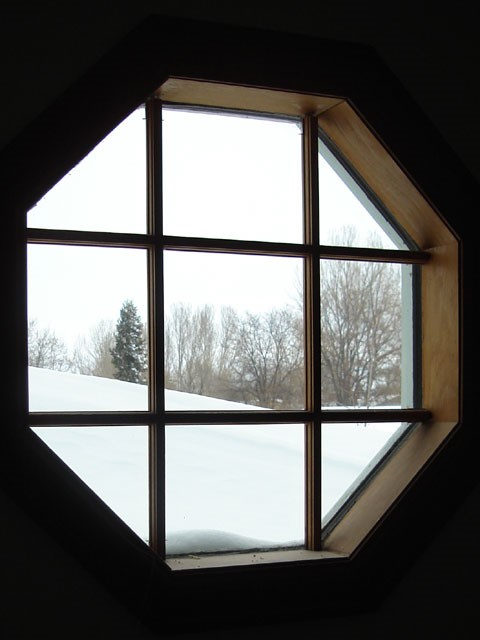
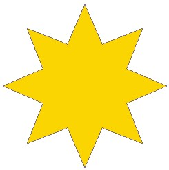

What is the name of the shape in the outline of the window?
100 green bottles are standing on a wall. If a sharp shooter can knock off 3 green bottles every minute, how many minutes until there are 85 bottles left standing?
How many numbers between 1 and 50 (including 1 and 50) contain the digit 1?
This is a picture of the flag of Germany – a country in Europe. How many ways in total could the colours be arranged? (include the arrangement you see now of black, red, yellow).
A school has nine classrooms. Three classrooms have 27 chairs each, four classrooms have 29 chairs each and the other two classrooms have 31 chairs each. If the school has 234 pupils in total, how many spare chairs are there?
Tom scores 4.5 out of 5 in a maths test. What is the equivalent mark if the test was out of 20?
If A = $1, B = $2, C = $3, D = $4 and so on….
What is the value of M+A+T+H+E+X?
What are the next three numbers in this number pattern?
3, 4, 7, 11, 18, 29, …
How many days between today (15th August) and Christmas Day (25th December)?
If a doctor gives you three pills, telling you to take one every half hour, how many minutes will the pills last?
Dan Carter scores a record 48 points in a rugby match for New Zealand. In the previous three matches for New Zealand he scored a quarter, a sixth and a third of this. In total how many points did he score in this match and the last three?
If the sides around this star shape are all the same length, and the length of one side is 8.4cm, what is the total distance around the shape?
The population of frogs in a pond doubles every month. If the population of the frogs today is 200, how many frogs will there be in six months time?
The numbers on five houses next to each other add up to 130. What are those five numbers? (house numbers go up in twos)
Six girls can plant 30 trees in a day. How many trees can ten girls plant in a day?
1,2, 3 and 6 are factors of 6 because they divide into 6 a whole number of times. What are the factors, in order, of 48?